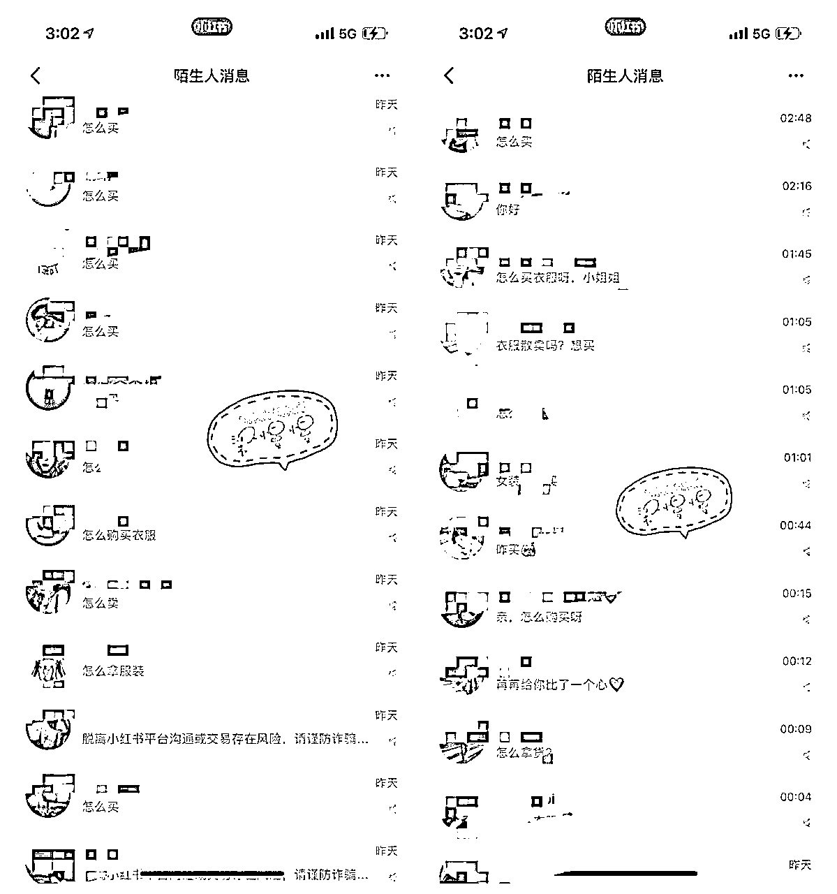
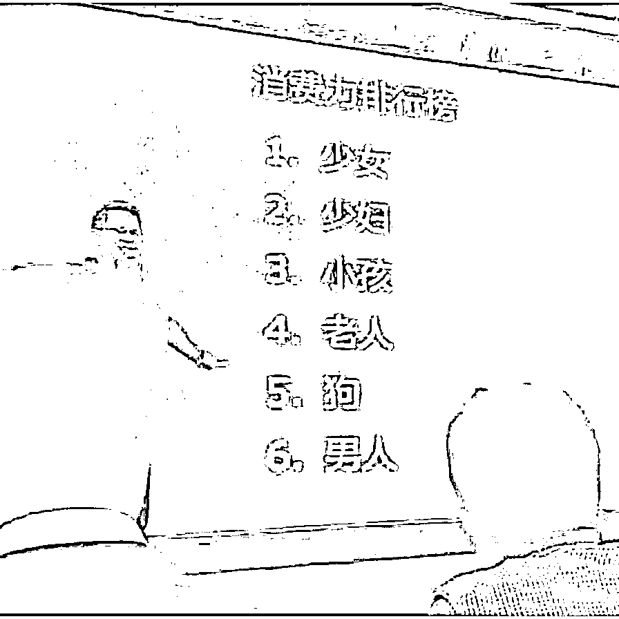
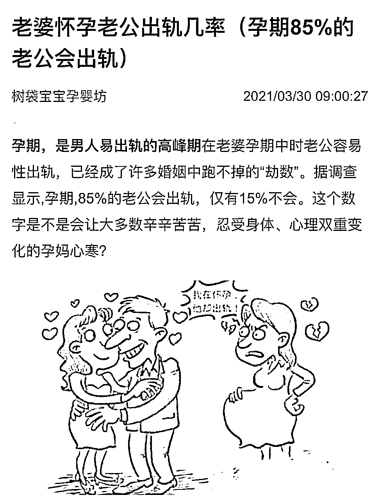
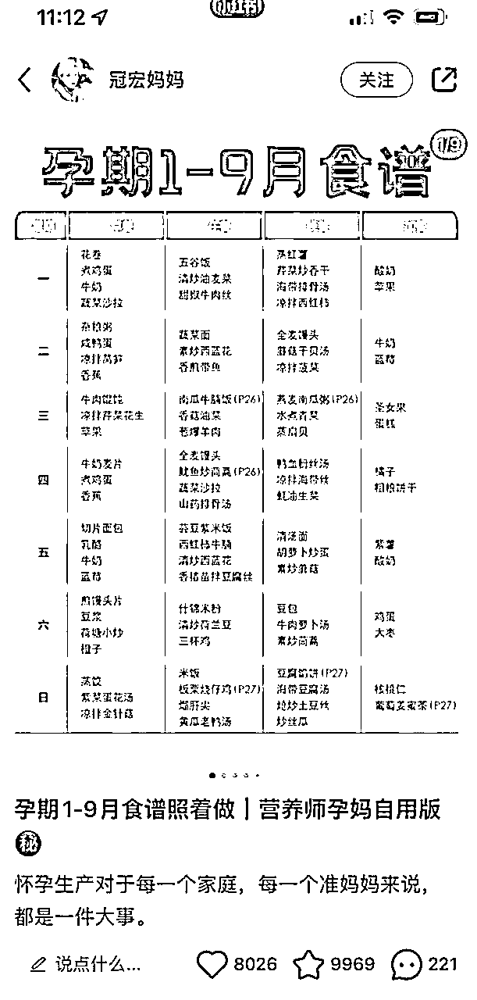
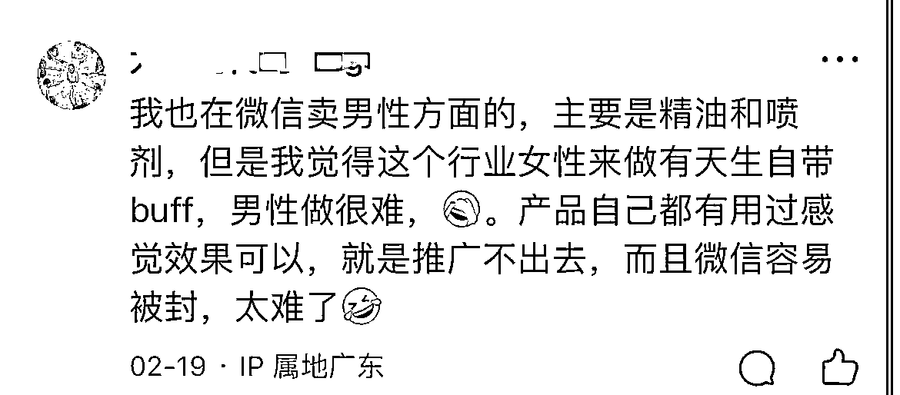

来源：https://fc8b1fft88.feishu.cn/docx/CM46dRFVqoHmcfxF8bHcKlein8g
引流一定要精准！而不是仅仅是为了引流而引流！
做成人用品，不是随便引流个成人就行的！因为每个人的需求不一样，如果你不能把引流营销精准结合，那么很可能到头来，都是在做无用功！
所有引流的最终目的！一定是为了成交！！
而不是仅仅只是朋友圈想加点好友凑凑热闹！！
引流是为了成交，为了赚到更多钱，甚至是让顾客从众多同行中只选择你
就像这样，我是卖衣服的，所有评论都是“怎么买”粉丝也是冲着买单来的，就能快速成交。

但是你做成人用品的话，比较特殊，毕竟这个东西在很多平台都是禁忌话题，容易被封号
我们就可以通过针对某部分特定群体+营销结合。
只要朋友圈营销做好了，你就可以做到，顾客看了你的圈，主动付费，自己说服自己买单！根本不需要费力去说服！
特别是成人用品，这类受众本身就不大
大部分人因为传统思想的影响，即使你引流来人，喊破喉咙了人家都不会买单，甚至有的你白送，人家都会觉得拿着很羞耻。
所以引流，你一定要针对你的卖点，来引流，针对卖点做营销，才能事半功倍！
比如成人用品，所有同行，都在引流男粉，看上去男人是消费主力军，但是事实上，更容易买单的，不是男人，而是女人，

消费行业，男人消费力不如狗，这句话还真不是空穴来风。男人偏理性，买产品都是深思熟虑，而不会冲动消费。
你想要引流，就找一个最容易为成人用品买单的群体：孕妇
引流孕妇，进行成交，是最容易的！！
为什么？你只要晒出这么一个数据，这是我随便上网搜的截图

只要你在你朋友圈晒出这个孕期出轨的数据，案例，让孕妇买成人用品回去给老公用，不仅提高夫妻的感情，还能防止老公出轨！几乎大部分孕妇，都会成交！并且付钱爽快！！
这个方法不仅能够避开同行竞争做引流，成交也飞快！
其实这涉及到人性的一个痛点 ：
如果你跟他说，用成人用品很享受，那么只有小部分想要享受的人，会为了享受买单。
但是，如果你说，不买你的男人就会出轨
那么她大概率会买单，比起得到短暂的快乐，我们更害怕失去，而且这个失去的代价是非常巨大的，难以承受的。
花小钱就能解决这个问题，大部分人都会买单
引流，你一定要想明白，这类人群平时有什么生活痛点，从这个生活痛点入手。找到一个引流的诱饵
一个思路，用「孕期食谱」引流，很多人怀孕，不知道什么能吃，什么不呢吃，你就可以分享这么一个孕期食谱，送给她们，让她们加你好友。
具体怎么做呢？
小红书发帖
下面这篇小红书文章，单单是这一篇文章，就能够引流几千人！

下面的评论，清一色都是在求”电子版“的，就可以顺其自然引导到微信上面，送他们电子版的资料了
资料哪里拿？某宝，三块钱一堆！引流内容怎么写？直接模仿！
这样引流孕妇群体，加上结合痛点的营销，很难不成交的
孕妇痛点有什么？怎么和成人用品精准结合？
在孕期就卖给她老公用的男性产品，痛点就是怕老公出轨。
孕期结束后，就必孕产品，痛点是生完孩子，短时间怀孕对健康有风险
也可以卖哑铃啥的，结合产后松弛，锻炼！！
甚至生完孩子后，还能招商，利用没钱的痛点，让一堆宝妈帮你卖产品，自动裂变~~~
同个人群可以反复回购，推荐多种产品
评论小哥也现身说法，以男性群体做为定位，真的很难裂变！

为啥很难裂变呢？？
男人最大的特点是啥：好面子，买了情趣用品，买精油喷剂，都是没人的时候悄悄用，怕被人看到。推荐给朋友就更不可能了，怕被嘲笑人不行，所以做男性生意，基本上不会有转介绍，转推荐！！
但是如果你换成转化女性，就完全不一样了，女性之间，特别是闺蜜，是会聊一些悄悄话的，什么都聊，女性有天生的旺盛的分享欲，所以更容易转介绍